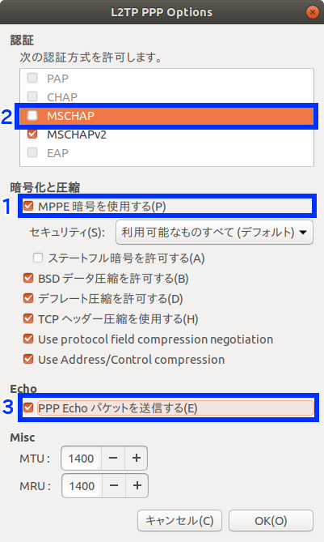

はじめに
Ubuntu 17.10でL2TPのVPN接続を試してみたのでメモです。 以下の手順の一部は接続先の設定に依存して変動がありえます。
セットアップ
必要なソフトウェアをインストール
network-manager-l2tp-gnomeをインストール。依存関係でnetwork-manager-l2tpやxl2tpdも入ります。
sudo apt install -y network-manager-l2tp-gnome
xl2tpdはVPN接続するときに起動されるのでOS起動時に起動しないようにしておきます。
sudo systemctl stop xl2tpd
sudo systemctl disable xl2tpd
VPN設定を追加
- 「設定」→「ネットワーク」→「VPN」の右上の「＋」ボタンを押します。
- 「VPNの追加」ダイアログで「Layer 2 Tunneling Protocol (L2TP)」を選択します。
- 「VPNの追加」ダイアログの「Identity」タブの項目設定
- 名前: (任意)
- ゲートウェイ: 接続先のホスト名
- ユーザー名: 接続に必要なユーザ名
- パスワード: 空のまま
- 「VPNの追加」ダイアログの「IPSec Settings」ボタンを押して以下の項目を設定。
- 「Enable IPsec tunnel to L2TP host」チェックボックスをオン。
- Pre-shared keyに接続先で設定されている事前共有キーの値を設定。
- 「Advanced」を展開して「Phase1 Algorithms」に aes256-sha1-modp1536 と設定。アルゴリズムの設定値の調べ方については後述。
- 「VPNの追加」ダイアログの「PPP Settings」ボタンを押して以下の項目を設定。
- 「MPPE暗号を使用する」チェックボックスをオン。
- 認証方式の「MSCHAP」と「MSCHAPｖ２」の2つのみがチェックされた状態になるので「MSCHAP」のチェックを外す。
- 「PPP Echoパケットを送信する」チェックボックスをオン（これは絶対に必要かは不明ですが試行錯誤した感じではオンにしたほうが良さそうな感じ）。
2018-05-06追記。その後他の環境やUbuntu 18.04でもVPN接続の設定を試した感じでは「PPP Echoパケットを送信する」は不要なようでした。
- Ubuntuを再起動。
- 再起動は不要かもしれませんが、何回か試行錯誤したときの挙動にばらつきがあったので、確実にするために再起動しておきます。
VPN接続の手順
- パスワードマネージャ KeePassX で接続先の自分のユーザー名に対応するパスワードをコピーします。
- デスクトップ右上のWifiのアイコンをクリックし、「VPNオフ」メニューを展開して「接続」のメニューを選択。
- パスワードダイアログがモーダルで表示されるのでコピーしておいたパスワードをペースト。
接続中
接続完了
VPN切断の手順
- デスクトップ右上のVPNのアイコンをクリックし、上記設定で追加したVPN名のメニューを展開して「オフにする」メニューを選択。
- デスクトップ右上のVPN接続のアイコンが消えたら切断完了ですが、ウェブブラウザでインターネットのどこかのサイトを開いてアクセスできない場合Wifiを一旦オフにしてからオンにします。
2018-05-06追記。Wifiを一旦オフにしてからオンにするよりはマシな回避策を見つけました。 Ubuntu 18.04でVPN切断後にホスト名解決が動くようにするための回避策
デバッグ
接続のデバッグ
接続がうまく行かないときは network-manager-l2tpのDebuggingのDebian and Ubuntuの手順 でデバッグします。
sudo killall -TERM nm-l2tp-service
sudo /usr/lib/NetworkManager/nm-l2tp-service --debug
例えば上記の「PPP Echoパケットを送信する」チェックボックスをオンにしていなかったときは以下のようなエラーが出ていました。
xl2tpd[3698]: control_finish: sending ICRQ
xl2tpd[3698]: check_control: Received out of order control packet on tunnel 61298 (got 0, expected 1)
xl2tpd[3698]: handle_packet: bad control packet!
xl2tpd[3698]: network_thread: bad packet
2018-05-06追記。接続のデバッグは上記の手順以外に、以下のコマンドでjournaldのログを見るのでも十分でした。
journalctl -f
IPsecのアルゴリズムのスキャン
IPsec Optionsダイアログに設定したAlgorithmは以下のようにして検出しました。
- ike-scan パッケージをインストール
sudo apt install -y ike-scan
検出用スクリプトを作成
以下のスクリプトを ike-scan.sh という名前で保存。
#!/bin/sh
# Encryption algorithms: 3des=5, aes128=7/128, aes192=7/192, aes256=7/256
ENCLIST="5 7/128 7/192 7/256"
# Hash algorithms: md5=1, sha1=2, sha256=5, sha384=6, sha512=7
HASHLIST="1 2 5 6 7"
# Diffie-Hellman groups: 1, 2, 5, 14, 15, 19, 20, 21
GROUPLIST="1 2 5 14 15 19 20 21"
# Authentication method: Preshared Key=1
AUTH=1
for ENC in $ENCLIST; do
for HASH in $HASHLIST; do
for GROUP in $GROUPLIST; do
echo ike-scan --trans=$ENC,$HASH,$AUTH,$GROUP -M "$@"
ike-scan --trans=$ENC,$HASH,$AUTH,$GROUP -M "$@"
done
done
done
- 実行パーミションを付与。
chmod +x ike-scan.sh
LT2Pの接続先を引数に指定して実行し、利用可能なアルゴリズム一覧を表示。下記の「接続先のホスト」は実際のホスト名に置き換えてください。
./ike-scan.sh 接続先のホスト | grep 'SA='
実行例は以下の通りです。
$ ./scan-vpn-algo 接続先のホスト | grep 'SA='
SA=(Enc=3DES Hash=SHA1 Auth=PSK Group=2:modp1024 LifeType=Seconds LifeDuration(4)=0x00007080)
SA=(Enc=3DES Hash=SHA1 Auth=PSK Group=5:modp1536 LifeType=Seconds LifeDuration(4)=0x00007080)
SA=(Enc=AES Hash=SHA1 Auth=PSK Group=2:modp1024 KeyLength=256 LifeType=Seconds LifeDuration(4)=0x00007080)
SA=(Enc=AES Hash=SHA1 Auth=PSK Group=5:modp1536 KeyLength=256 LifeType=Seconds LifeDuration(4)=0x00007080)
上記の内容をIPsec Optionsにフルで指定する場合は以下のように書くことになります。
- Phase1 Algorithms: aes256-sha1-modp1536,aes256-sha1-modp1024
- Phase2 Algorithms: 3des-sha1-modp1536,3des-sha1-modp1024
ですが、わざわざ弱いアルゴリズムを指定する必要もないので、上記では一番強い aes256-sha1-modp1536 のみを指定する手順としました。